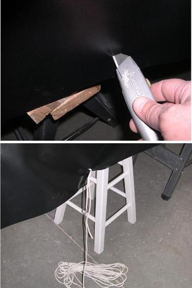

| Covering The Hull (2 of 6) | Menu Previous Page Next Page |
|  |
One-Piece Hull ( Lacing )
Cut 1/2inch slits every 2 - 3 inches along the gunwale overhang created in step 2. These will be used for the temporary lacing. Cut the slits starting at the center and work to within a foot of the stems initially. A Stanley razor knife is ideal for this purpose.
A second method ( preferred) is to use a hole punch to cut holes in the PVC every 2 - 3 inches. Lace the skin with nylon cord. Hole Punch / Lacing. Use the (BACK) key to return.
Tie 1/8 or smaller nylon /polyester cord to the center of the PVC overhang near the coaming area. Sear the ends of the cord to prevent unraveling.
|